What I am building now
Right now I am designing agentic architectures built on foundation models for robotic systems, aimed at making autonomous robots reliable and accountable in how they sense, decide, and act.
Robotics PhD Student, Arizona State University
Robotics PhD student working on embodied and agentic AI and Robotics with direct applications in industry.
Earlier I worked on nonlinear dynamics and vibration developing a system for autonomous testing of vibrating systems that makes characterizing nonlinear, real-world dynamical behavior far more tractable. In acoustics, I have worked on binaural hearing, specifically on animals auditory systems leading to potential bioinspired hearing designs. For me, working across disciplines isn't a detour, it's how I think.
My PhD work sits at the meeting point of physical sensing and agentic AI. I build systems that let autonomous machines listen to, feel, and reason about the physical world they operate in, rather than relying only on cameras and predictions.
The direction I am pushing toward is giving AI agents a real sense of ground truth about the machines, structures, and environments around them, work that matters most in industries like manufacturing, energy, and infrastructure, where an autonomous system acting on a wrong read can be costly or dangerous.
I am always glad to talk with people building in this space, whether that is a research collaboration, an early conversation about a startup, or an industry team looking to bring real world sensing into their AI systems.
The throughline across all of it is physically grounded intelligence, systems that have to sense, reason, and act in the real, noisy, physical world.
I work on:
Right now I am designing agentic architectures built on foundation models for robotic systems, aimed at making autonomous robots reliable and accountable in how they sense, decide, and act.
How the solutions nature has already optimized over millions of years, in how animals sense, move, and adapt, can be translated into better designs for sensors, mechanisms, and decision making in robots.
I brainstorm at every stage of a project, not just at the start, treating each step as a chance to find a better and more optimal path rather than settling for the first solution that works.
I am open to conversations about startups, research and development roles, or teaming up with others to build something new. I already have my own ideas that I am actively developing and I am looking for like minded people to build alongside, but I am just as open to hearing what others are building and finding where our ideas might fit together.
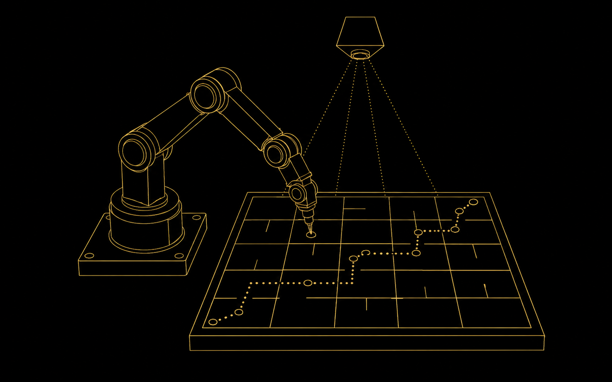
Solved a 4x4 maze end to end, from a single photograph of the board to executed joint motion on the real arm.
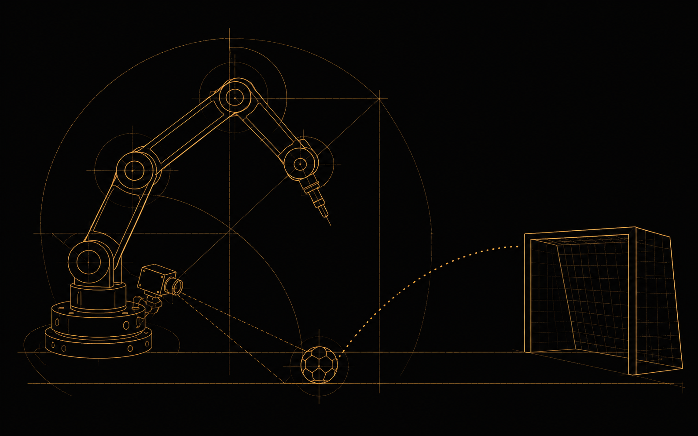
A camera guided robotic arm that finds a ball and a goal, then kicks the ball in using inverse kinematics and a timed servo sequence.
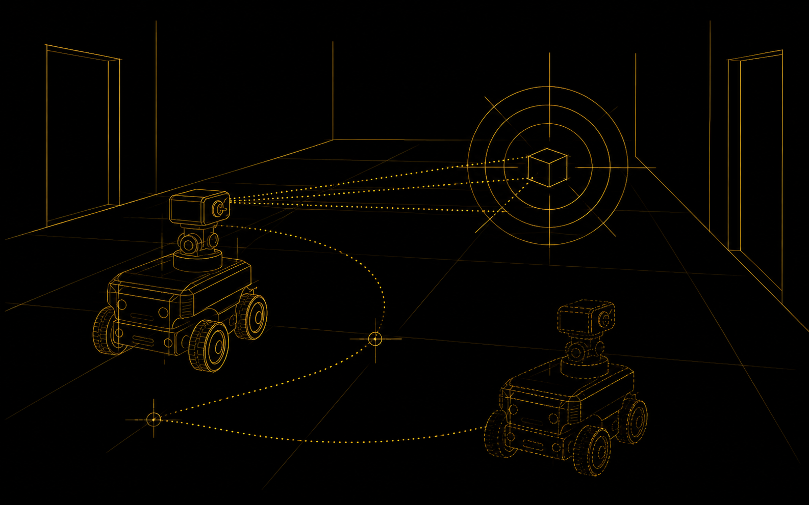
ROS 2 coursework applied in a TurtleBot4 that repositions itself for a better view before trusting a pose estimate.
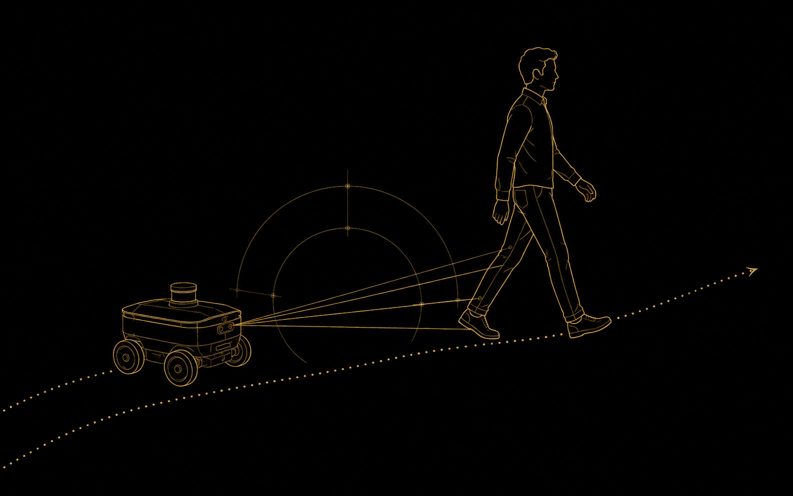
A TurtleBot4 that follows a specific person by detecting their shoes and avoids obstacles with LiDAR gap finding.
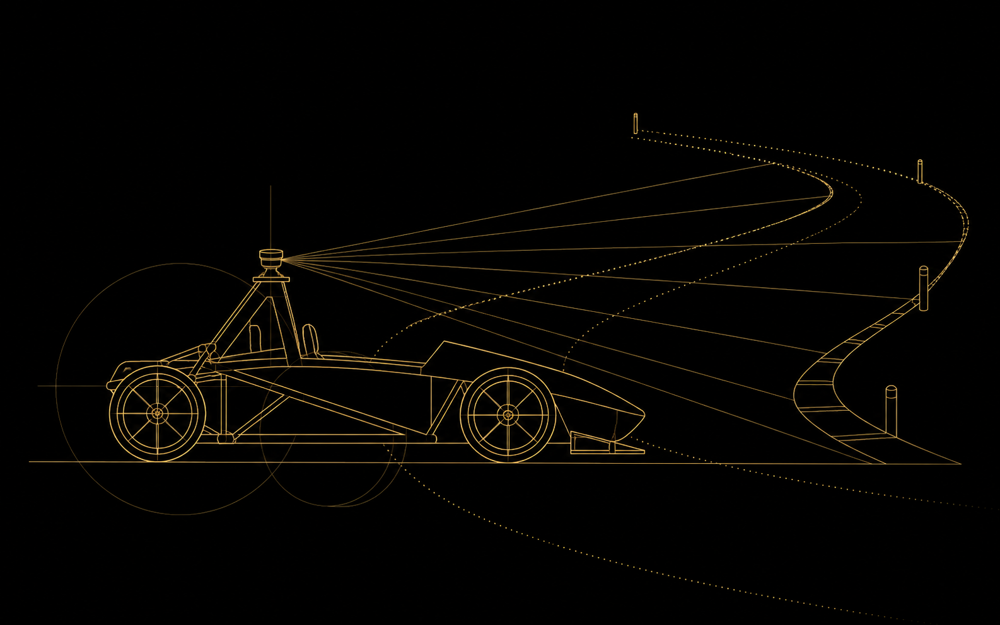
A 1:10 scale racecar running emergency braking, PID wall following, and follow-the-gap, proven in simulation, then on the real car.
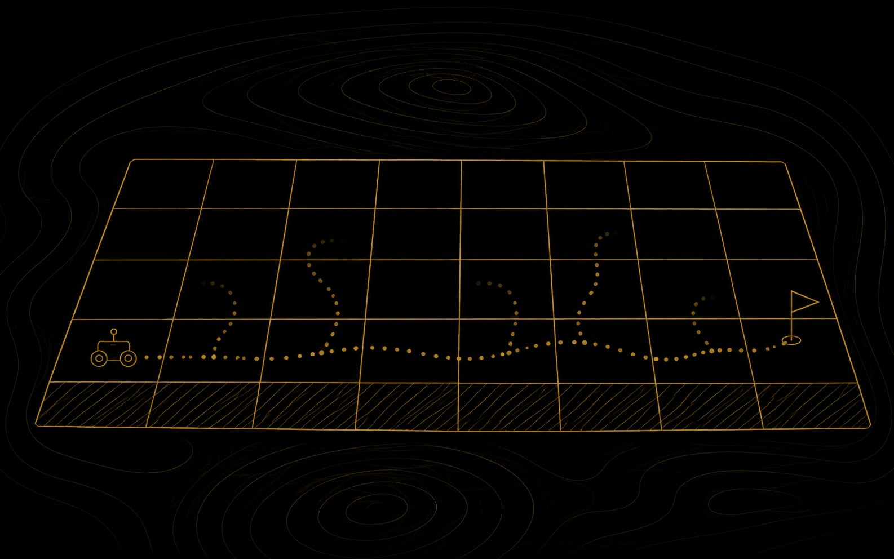
Q-learning for shortest path navigation in a grid world, learned entirely through trial and error.
Line search, trust region, conjugate gradient, and constrained optimization methods.
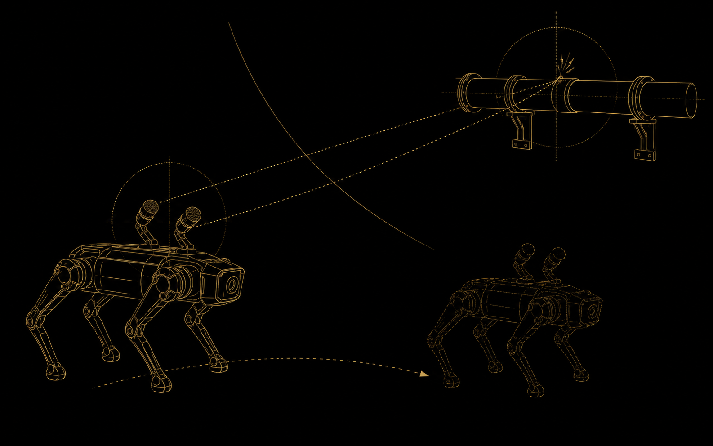
Paper and writeup in progress.
Paper and writeup in progress.
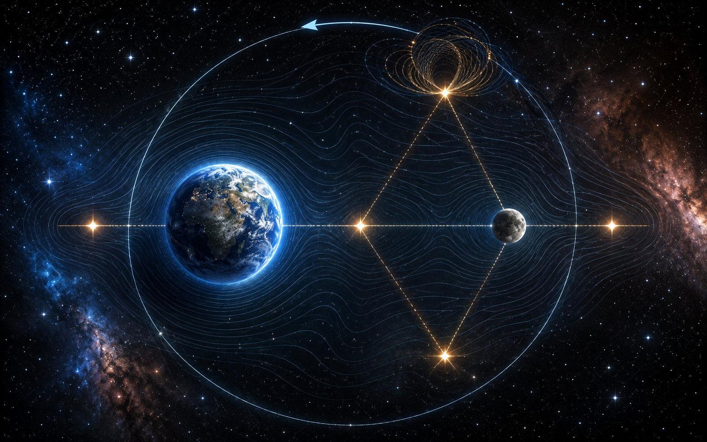
The Earth and Moon system mapped through the Lagrange points and the Jacobi constant.
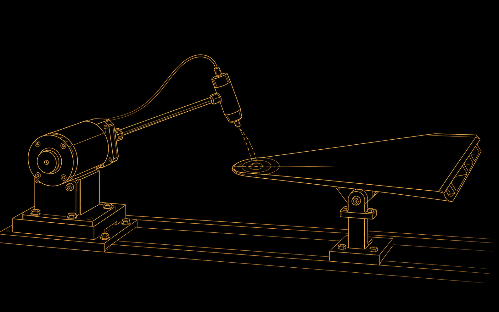
A stepper motor driven modal hammer that corrects its own aim until it converges on a requested strike force.
Paper and writeup in progress.
A few things from outside the research that still say something about how I think.
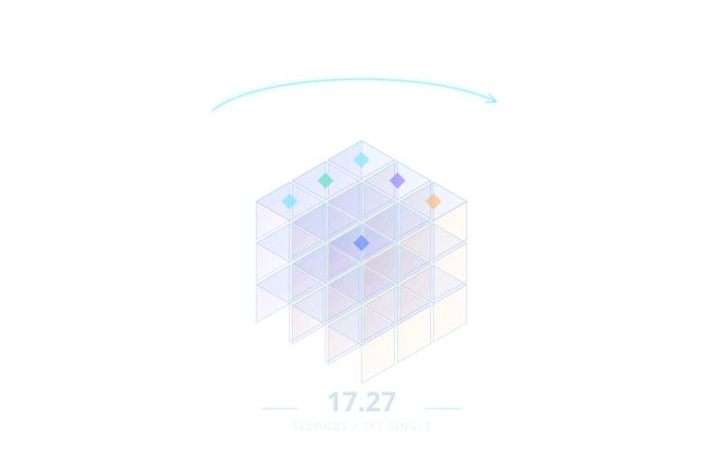
I competed in two official World Cube Association events, with a recorded 3x3 single of 17.27 seconds, and I also competed in the one handed and blindfolded categories. I stopped competing after 2012, but the cubes never went away. I still solve every day across a range of puzzle types, for the same reason I loved it as a kid: finding patterns.
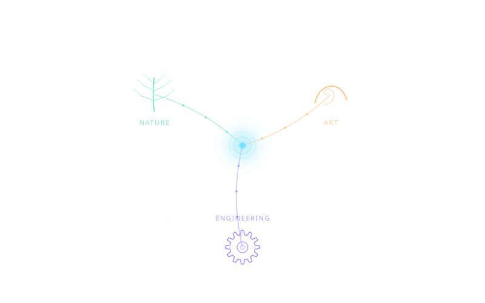
I think best across boundaries. I am drawn to interdisciplinary work, and I often look to other fields for ideas. Analogy is my main tool for it: noticing how one domain solves a problem and asking what the same move would look like somewhere else.
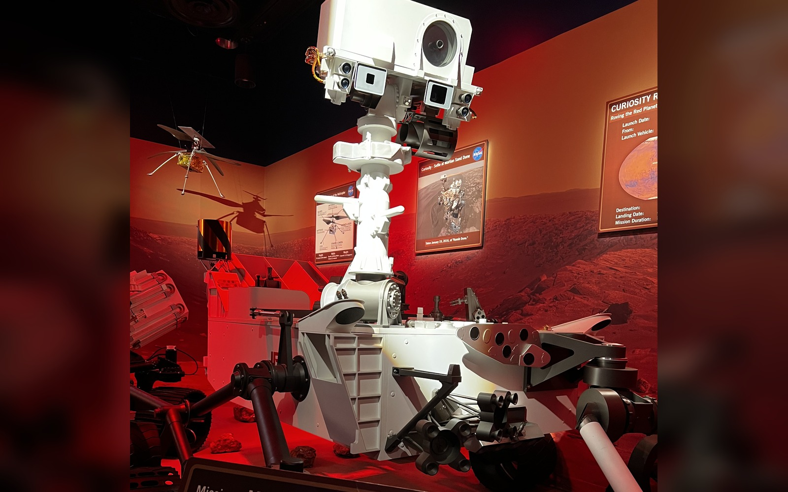
My curiosity runs wide and likes to wander. Lately it keeps circling flight, space, and biology. I love how the most agile birds fly with so little wasted effort, the design problems behind becoming a multi planetary species, and how unsettlingly clever viruses are at getting their way. I am just as curious about people: the ones who ask odd questions, or who see things from an angle I would never have found alone, are usually the ones I want to talk to.
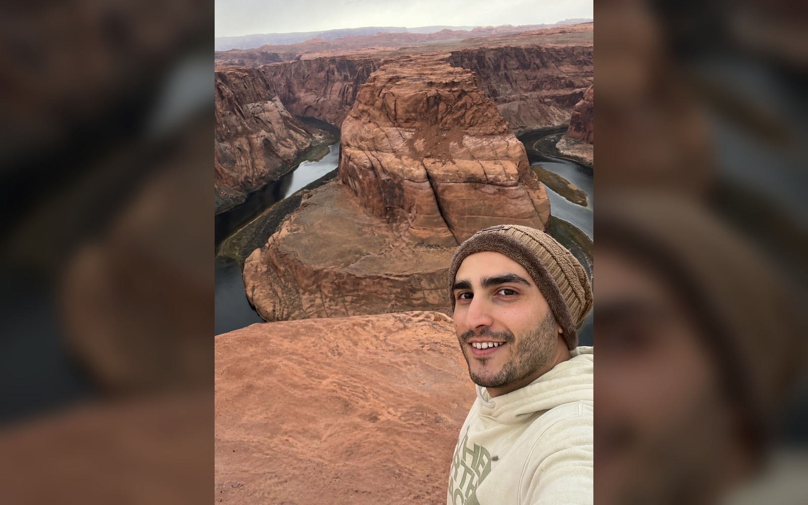
Away from work I am usually out in nature or camping, or playing something with a bit of strategy to it: video games, chess, and of course cubes. I also read constantly and widely, psychology and personal development, economics, general history, and novels. Different shelf, same habit: trying to understand how things and people actually work.